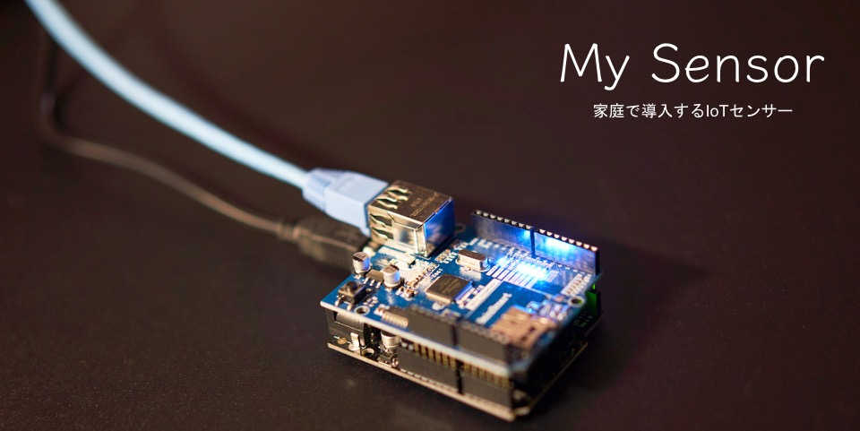
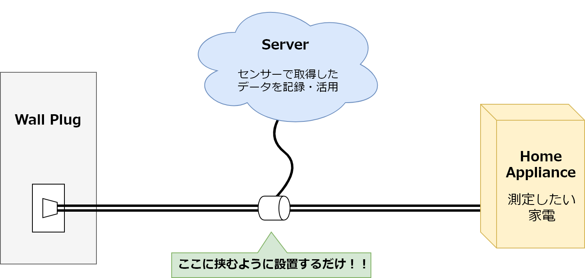

このサイトでは「電子工作」・「プログラミング」・「ネットワーク」を用いて
自作で自宅にIoTセンサーを導入することを目的にして紹介します
=> 制作過程のページはこちら(製作中)
=> githubのページはこちら
Product Introduction
東日本大震災以降，日本は電力供給を再生可能エネルギーに頼っていく傾向があります
しかしこれらの発電エネルギー量は少なく，目下の対応としては省電力化を進める必要があります
そのためには家庭で使用される個々の機器の消費電力を知り，省電力に対する意識向上をはかっていかなくてはなりません
消費電力を測定するだけの機材は既に販売されていますが，
得られたデータを後に役立てるようにするために必要なIoT化されたデバイスはほとんど目にしません
そこで市販の機材を組み合わせて作成できるIoT化された消費電力測定デバイスを作成することにしました
How to use

延長ケーブルのように使用することで，接続されている家電製品などの消費電力を
モニタリングすることを可能にします
Features
既にある家電を買い換えることなくIoT化することができます
ウェブブラウザを使用して様々な形式のグラフを表示可能です
データベースにデータを記録するので，後から任意の加工をしてデータを利用できます
Application Examples
電気使用量の時間変化を調べることができる
センサーパーツを追加することで，電気使用量以外にも気温や湿度などの環境情報を取得することができる
特定の機器の消費電力を調べることが可能，かつ情報の取得が簡単にできる
データベースにデータを記録しているため，統計処理などが可能
Profile
Master course student.